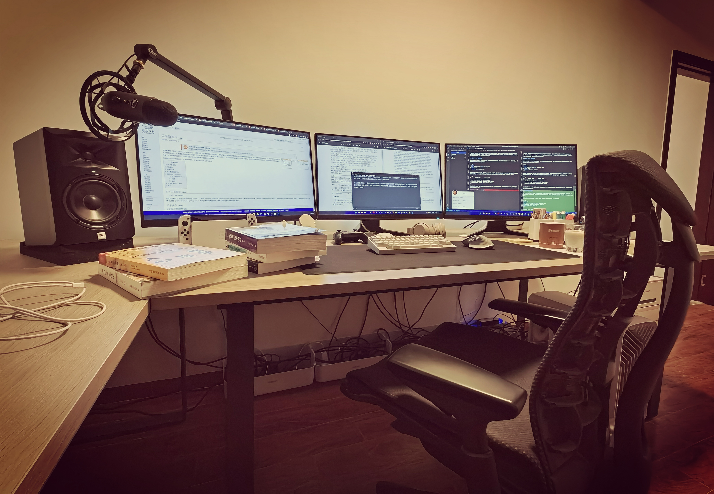

2023 年电脑设备配置分享¶

前几天收拾完书桌，将自己现在的工作环境拍了一张照片发到网上，没想到收到大家蛮多点赞的，有些朋友向我询问其中的一些设备，也有人建议我写一篇文章详细跟大家分享。
这让我想起自己以前也很喜欢看别的博主或者技术前辈的一些设备分享文章，比如 Danny Choo 的 Desk Diary 系列。 通过了解他们使用的工具以及选择这些工具的理由，不仅能够在工作上带来启发，也能够在有需要购买同类产品的时候得到一个很好的参考。
考虑到自己已经蛮长时间没有写博客了，写一篇轻松愉快的设备分享文章似乎是重拾博客的一个不错的起点 —— 那么就让我们开始吧！
主机¶
我现在使用的主机还是去年组装的，基本配置是 i7/3080ti/32GB RAM/2TB SSD 。过去一年，这台主机很好地满足了我工作和游戏的需求，而且分型工艺的 Torrent 机箱让这台主机的颜值一如既往的在线，我目前对它的唯一不满就是编码/导出视频的时间太长了。
调研了一下之后发现这个问题除了升级显卡或者买台 M2 的苹果电脑专门进行视频剪辑之外似乎没有其他更好的办法，不过这方面的提升并不是目前最迫切的，可能会等到下半年再考虑。
此外，我还一个 8 TB 的外置硬盘，用来存放备份数据还有我打游戏的录像，也服役了一年，占用 4 TB 左右，现在情况一切良好。
操作系统¶
考虑到微软的 Win 11 对 Intel 的大小核架构有更好的支持，所以我从一开始安装的就是 Win 11 。
在刚开始的时候，Win 11 的可用性在我看来处于一种非常微妙的状态：在 90% 的情况下，它用着是好的，但是时不时会出现一些奇怪的问题绊你一下，让你不爽。最严重的情况发生在上一年的七八月份，有一段时间我时不时玩着玩着游戏就会蓝屏或者网络掉线，让我苦恼不已，差点没把它卸载了换 Win 10 。好在现在系统终于稳定下来，已经很久没有出现过问题了。
在涉及编程的工作方面，我之前是通过在 VritualBox 虚拟机上运行 Ubuntu 来完成的。由于虚拟机需要占用大量资源才能够流畅运行，而我又习惯在工作的时候用 Chrome 打开一大堆网页来查资料，有段时间我感觉 32 GB 内存已经不太够用了，有增加内存的打算。
不过最近我发现微软的 WSL 已经做得相当成熟，正在逐渐将工作环境从虚拟机迁移至 WSL 。在 WSL 上运行 Ubuntu 不仅占用内存非常少，而且运行速度也非常快，这样一来似乎又没有必要增加内存了（笑）。 我个人感觉 WSL 是个非常有趣的东西，接下来可能会写一篇文章再详细地说说这个事情。
在前一两年，我曾经同时使用 macOS 、Ubuntu 和 Windows 三种系统，但是在不同平台上的操作差异、配置不同和数据同步等各式各样的问题却把我搞得筋疲力尽。在经历过这些折腾之后，我现在更偏向于使用单个系统完成绝大部分工作，然后使用 WSL 这类轻量化的虚拟方案来完成必须在某个平台的工作。
显示器¶
我现在使用的是外星人的 AW2720HF 显示器，三台组成三连屏，无论工作还是打游戏都非常方便。
外星人的显示器，无论外观颜值还是屏幕本身的显示质量都是非常棒的，240hz 的高刷新屏幕用来打我最常玩的守望先锋这类 FPS 游戏可谓再好不过了。当然，这类产品的一大缺点就是价格比较贵。当时决定组三连屏的时候我自己也很纠结，要不要一台外星人+两台普通 27 寸显示器（60hz或者144hz），这样一来就能省去大概一半的预算。
不过后面还是咬咬牙上了三台外星人，后面发现这个决定还是很值得的：
首先，对于我这种外貌协会和强迫症患者来说，三台同款的显示器在外观上肯定要比两种不同款色的显示器混搭在一起要好看得多。现在三台外星人显示器摆在一起就算不打开，也是一种风景。
其次，之前我预想只有一个显示器用来打游戏，后面发现双开/多开或者边打游戏另一个屏幕边实时监看（直播或者录像）的场景并不少见，这时如果只有一个屏幕是高刷而别的屏幕是低刷的话，那么肯定会非常痛苦，而三个屏幕都是高刷就没有这种问题。
最后，三个同款屏幕的显示效果基本完全一致，同样的内容无论是放到哪个屏幕都会得到一样的结果，这对于我这种习惯经常将窗口左右跨屏移动的人来说非常重要，而混搭屏幕是很难保证这一点的（不同厂家、不同型号乃至不同批次屏幕的色差和显示效果真的千差万别）。
总结来说追求好的产品/效果就得花更的多钱，不过贵不是它们的问题，是我的问题（哭）。
我现在对于屏幕的期待就是希望在书房再添加一台 65 寸或者 75 寸的高刷新电视，这样玩老头环或者荒野之息之类的开放世界游戏就会更有临场感了！对于这类游戏来说， 27 寸的显示器真是太局促了。
键盘¶
我现在使用的键盘是 HHKB Hybrid Type-S 白色无刻版。这把 2020 年 5 月购入的键盘迄今服役已经快 3 年了，但手感还是一如既往的棒。HHKB 的手感在我看来就像更柔软一些的樱桃茶轴，而我最喜欢的正好就是茶轴，所以 HHKB 的手感可以说是正合我意。
我无论工作还是打游戏都使用这把 HHKB 键盘。我之前曾经使用过罗技、雷蛇和樱桃的游戏键盘，但它们都无法同时满足我对于手感、静音、小配列（<87，我之前用87配列打FPS的时候鼠标还是会经常碰到键盘）和外观的要求，这样筛选下来反倒显得 HHKB 相当完美了。
不过由于 HHKB 的蓝牙抗干扰能力并不是特别强，只连蓝牙打游戏偶尔会受到干扰，我虽然很讨厌桌面上有多余的线缆，但最后还是妥协了，买了一条 GeekCable 的客制化键盘线让 HHKB 直接连接电脑使用。GeekCable 的这条键盘线还是很酷的，既然是迫不得已要往桌面上加线，那么至少选一条好看一点的会让我好受一些。
之前还担心 HHKB 如果用来高强度打游戏会不会缩短寿命，但现在看来纯属多虑了。最近清理了一遍灰尘之后手感又变得跟之前一样丝滑了，键帽磨损程度也很低，比起之前那些只用一两年就键帽打油或者手感断崖式下跌的游戏键盘好多了。
鼠标（罗技相关）¶
在过去数年，我的鼠标使用历程如下：罗技 GPW，罗技 GPW 2 代，雷蛇毒蝰终极版，雷蛇毒蝰 V2 专业版。
GPW 1 代我认为是当年最经典的鼠标，并且直至今天也是性价比非常高的一款鼠标：万金油的轻量化外形、HERO 传感器、长续航、无干扰的低延迟，可以说完美符合包括我在内的绝大部分游戏玩家需求。当年刚出的时候就第一时间购入，并且一切正常用到 2 代推出才光荣退役，是我非常满意的一款鼠标。
可能因为有 GPW 1 代珠玉在前，所以 GWP 2 代并没有给我太多惊喜：除了重量降低了十来克之外，这款鼠标对比 1 代可以说毫无进步，甚至连新的传感器都没有配备，但当时首发的价格却足够买两个 GPW 1 代了。更关键的是，我购入的 GPW 2 代使用还不到半年就出现了左键连击的情况，这件事让我对罗技这个品牌非常失望，从而萌生了转投其他鼠标品牌的想法。
我知道罗技的售后服务非常好，只要你把保修期内的坏设备寄过去，它们就会给你免费修好或者换新；但比起享受这种“优质”服务，我更愿意使用一款能够一直用好几年都不损坏的产品。毕竟这种服务就像一间标榜“如果在菜里面吃出虫子我们就给你免费换一碟”的饭店，有谁会愿意到这样无法保证质量的饭店去吃饭呢？反正我是不愿意去，或者至少不愿意惹这种来回送修的麻烦。
鼠标（雷蛇相关）¶
GWP 2 代出问题之后，我就购入了跟 GWP 系列对标的雷蛇毒蝰终极版，后者的价格跟 GPW 1 代类似，但是却比 GPW 2 代便宜，上手之后自然明白一分钱一分货的道理：这款鼠标的模型握感是不错的，并且两侧有防滑条，所以它握起来比鹅卵石一般光滑的 GPW 更稳定；但是，但是，这款鼠标有一个比较致命的缺点，就是它的重心位于鼠标的后半部分，而我们抓鼠标一般是抓鼠标的前半部分，于是这款鼠标使用起来就会让你感觉很难受，每次把鼠标提起来都好像鼠标后半部一直吊着一个重物一样。
简单来说，我觉得毒蝰终极版使用起来的感受是不如 GPW 的，但毒蝰也不是完全没有优点，比如它的传感器我一上手就感觉比 GPW 的 HERO 精度要高不少，导致我甚至要降低鼠标的灵敏度以适应它。此外毒蝰终极版的充电底座也是非常方便的。
在我使用了毒蝰终极版不久之后，雷蛇又推出了更新版的毒蝰 V2 专业版，我也第一时间购入并且使用至今。跟 GPW 1 代一样，毒蝰 V2 也是我满意度非常高的一款鼠标：它不仅修复了我上面提到的重心问题，使得整个鼠标模型更趋完美，并且还将总体重量降到了比 GPW 2 代更轻的 59 克；去掉了两侧的软胶防滑条，虽然损失了一点握持的稳定性，但却不用再担心防滑条的磨损和腐蚀问题了；最后又进一步提升了传感器的精度，可以说在这方面已经甩开 GWP 的 HERO 两个身位了（用户甚至还可以通过 4K 轮询接收器进一步提升毒蝰的性能）。
如果要说毒蝰 V2 还有什么不如 GWP 的话，那我觉得应该有两点：1）毒蝰的按键和滚轮噪声都非常大，不如 GWP 清脆和小声；2）毒蝰在高强度使用的情况下四五天就要充一次电，而同等情况下 GPW 可以用大概一周，并且毒蝰 V2 只能插线充电，不像 GWP 可以无线充电（无线充套件需另购），也不像它的前辈毒蝰终极版可以通过充电底座充电。
除了毒蝰 V2 之外，我还同时使用着罗技的 MX Master 3 鼠标 ，它的握感非常非常棒，并且提供了水平和垂直两种滚轮，可以让我在做视频编辑之类的工作时更方便一些，唯一的问题是这个鼠标真的太重太重了，使用起来手腕和手臂会非常非常累，如果将来推出轻量版的话我一定第一时间购入！（等等，你刚才不是说已经对罗技失去信心了吗……？！）
鼠标垫我使用的是雷蛇的重装甲虫 V3 XXL ，这款巨大的鼠标垫兼任了桌布的功能，能够同时容纳我的键盘和鼠标并且保护我的手部，非常棒！
音频设备¶
音响方面，我的音箱使用的是 JBL LSR305 ，声卡使用的是 PreSonus 22vsl ，都是很早之前的设备了，现在已经停产/升级换代了。之前虽然也有考虑过升级一下这方面的设备，但结果每次都是优先把钱投入到主机/显示器这些地方，不过我对这方面的要求也不高，而且目前音响的效果也还不错，所以就继续先用着吧。
今年对音响的最大改变应该是给音箱换了垫子吧。之前我使用的都是传统的桌上式木制的音箱支架，看上去比较老土，而且占用空间比较大，音箱声音大的时候还会引起共振，后面换成爱克创音箱海绵垫就好多了，这种海绵防震垫不仅能够更好的消除共振，而且造型也比之前的木制支架好看多了。
耳机我使用的是索尼的 WH-1000 无线降噪头戴式耳机，最早买了一支 XM3 ，后面出 XM4 又买了一支。当时买的时候 XM4 虽然是升级版，但其实降噪效果/音质跟 XM3 提升不大，百分之二十吧，听说现在又出了新的 XM5 ，我还没试过，不知道提升大不大。
降噪耳机对于我打游戏和工作时候帮助还是很大的。我平时都比较喜欢边工作边听歌，虽然有音响，但音响外放的音乐还是会受到外界干扰，还有键盘/鼠标敲击的声音和电脑风扇发出的噪音也会对我造成干扰，而降噪耳机能够很好地帮我隔绝这些噪音，让我可以专心工作。
我桌面上还有一套 Blue Yeticaster 麦克风套装，用于录制视频和打游戏时跟队友沟通。其实我更早前就购入过一支 Blue Yeti X 麦克风，后面因为打游戏时敲击键盘会跟桌面上放置的麦克风引起共振，于是就想着买个支架把麦克风支起来，看了很多支架最后感觉还是 Yeti 自家的支架最好。但单纯买支架+防震架的价钱跟直接买 Yeticaster 套装的价钱相差无几，而套装还附带一支 Yeti 麦克风，于是当时就直接买了一个套装。原本想着将附带的 Yeti 留着备用，后面因为套装的全黑色比 Yeti X + 支架更好看，于是就保留了整套 Yeticaster ，反倒是 Yeti X 闲置了。
过去，我在录视频和打游戏的时候总是小心翼翼地调整麦克风的位置，并且在操作的时候尽量轻拿轻放，以免键盘、鼠标以及桌椅的噪声被意外地录进麦克风里面。后面发现使用 Nvidia Broadcast 的麦克风降噪功能几乎能够完全消除类似的噪声之后，现在已经不用再担心这样的情况了，有录音需求或者重度使用语音沟通的朋友一定要试试这个软件！（需要用到 Nvidia 显卡，不清楚 AMD 是否也有类似的软件。）
打印机¶
我现在使用的打印机是华为的 PixLab V1 ，这台机器的主要优点是可以无需安装任何软件，直接联动我的华为手机进行打印，除此之外它跟我之前使用过的惠普、爱普生等打印机没有什么不同。
我对于打印机的主要烦恼在于它们的使用率总是太低了，一年可能就用那么两三回，用来打印我的出版合同或者证件信息，然后闲置一两年就坏掉了（前面的几台都是这么坏掉的），可是如果自己不买打印机的话，出去打印又担心资料泄漏，这方面还是挺头疼的，如果有更好的解决方法就好了。
桌椅¶
我使用的桌子跟椅子就跟我前两年刚搬到这个房子时一样，两张同样款色的红苹果简约直板木桌（一张 200*95 ，另一张200*70），而椅子则是赫曼米勒的 Embody 座椅。
过去，因为我把工作用的电脑和玩游戏用的电脑分开摆放，所以两张椅子各放在书房的两个角落。但是在我决定将工作和游戏合并到同一台电脑完成之后，我就将两张桌子拼成了一张 L 型的转角桌子，这样一来就相当于有了一张长度达到 270 厘米的超长桌子，足以摆放我的三台显示器以及两个音响有余，我个人对此还是非常满意的！
这里需要提醒一下，只要空间允许，买桌子永远不要怕太大 —— 随着需要摆放的东西越来越多，你只会觉得桌面的空间越来越少！桌子买大了你大不了不用那么多空间，但买小了可就悲剧了，你要么只能重新再买，要么只能削足适履，减少桌子上你想要摆放的物品。
至于 Embody 椅子，当时买的时候说实话还是挺犹豫的，毕竟是一万多块的椅子，还是蛮害怕交智商税的。但是这两年多来，每天 6~8 个小时甚至更久的高强度乘坐，这张椅子都给了我很好的体验，而且我的身体也没有出现很多同龄人越发常见的腰痛甚至腰椎病，我觉得跟这张椅子的关系还是很大的。
当然，这张 Embody 也并非完美无缺，比如我经常想要吐槽的就是它缺少头枕，有时候真的颈椎累了想要靠一下都找不到地方。考虑到 Embody 在业界久负盛名，很多朋友估计也想要知道它具体的体验如何，并且现在也有很多关注人体工学椅的朋友，我以后可能会找个时间写篇更详细的文章，说下我对各种人体工学椅的看法以及 Embody 的使用经验分享。
线缆收纳¶
既然桌子上面摆放了大量电子设备，那么就不可避免地产生出大量的线缆，其中包括视频线、数据线、网线和电源线。为了管理和束缚住这些“剪不断理还乱”的各种线缆，我使用了大量魔术贴、延长线和 USB HUB ，这些产品基本上都来自绿联和一绳。
尽管如此，但我并没有把线缆完全整理齐整，更多只是把它们大致地束缚好，然后让它们自然地垂落。因为电脑设备的线缆不像电脑主机内部的线缆，内部的线缆可能很久才会变动一次，而外部的线缆则经常会随着电脑外设的变化而变化，把线缆束缚得太好反而会导致麻烦。
最后，因为扫地机在扫地的时候很容易卡住或者拉扯电脑设备的线缆，所以我购买了几个奥睿科的线缆收纳盒，让线缆和电源插板可以放在盒子里面而不是直接接触地面，这样就不会被扫地机影响到了，借此也进一步提高了线缆收纳的美观程度，我觉得还是挺好的。
总结¶
好的，关于电脑设备的介绍到这里就结束了，不知道有没有谈到你想要了解的设备呢，又或者你有关于设备选择方面的更好建议？如果是的话请不要吝啬，随时通过推特或者微博告诉我！